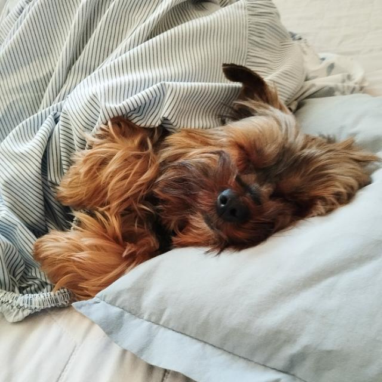
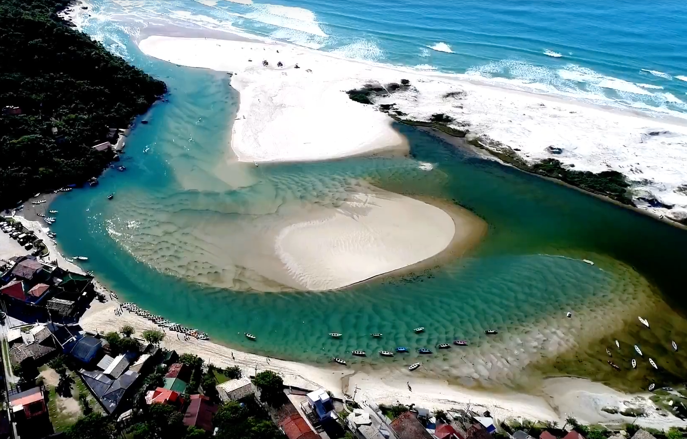

QUEM MIM SER???
Artur de Oliveira Alves da Silva
- 15 anos de idade
- Moro em Barueri, Alphaville Industrial
- Tenho dois irmãos, sou caçúla e gêmeo com um deles (que estuda aqui também)
- Gosto de jogar, escutar e tocar música, e viver em geral
- Gosto de animais
- Música Favorita
Curiosidades sobre mim (eu acho)
- tenho um yorkshire chamado Paçoca
- Gosto de instrumentos e música (toco teclado, violão e guitarra)
- Não mim chamem de tutu
- Não gosto que coloquem meu nome com H >:(
- Quando eu tinha 7 anos fui atropelado por um grupo de ciclistas
- Eu gosto de strogonoff
- Acho muito buxa Artur com H (Arthur), tipo, é bem mais econômico sem.
Clique para ver imagem
Clique para ver imagem
Lugares que já visitei:
- Gramado, RS
- Curitiba, Paraná
- Guarda do Embaú, SC
Clique para ver imagem

Clique para ver imagem

Clique para ver imagem
Gostaria de ir para:
Só lá mesmo. Meu irmão mais velho mora lá :)
Tier list de matérias favoritas
| S | SOP | Educ. Física | Matemática | Geografia |
|---|---|---|---|---|
| POO | Inglês | |||
| A | LPR | UX | BD | Física |
| Filosofia | IA | química | ||
| B | DS1 | Português | Biologia | Chefia e Liderança |
| C | POO |
Tier list de melhor linguagens
ainda vamos aprender mais...
| S | Java | Shell Script | JavaScript | |
|---|---|---|---|---|
| A | Python | HTML | Inglês | SQL |
| B | CSS | Português | ||
| C | Java | Shell Script |
Nota passada
Abril~ de 2025
"Eu sou o Artur de Oliveira, tenho 15 anos e hoje programo meu
primeiro 'site funcional'. Quando comecei minha 'carreira'
na programação tinha aproximadamente 11 anos. Durante a
quarentena fiz aulas de JavaScript, e apesar de não entender
muito no momento, foi aquele curso que me levou a seguir o
caminho que sigo hoje. Há 9 meses, quando comecei o processo
seletivo na escola de negócios Germinare, pude jurar que
isso não era para mim. Porém aqui estou eu, já a 4 meses na
escola, programando em cada vez mais linguagens e fazendo um
site funcional completamente do 0.
Mas tudo isso, foi
graças a esforços que realizei no passado, para compensar a
mim mesmo no futuro. Isso é uma prova de que todos somos
capazes de conquistar aquilo que queremos, e de seguir o
caminho que clamamos.
Para caso eu volte no futuro,
espero que você humilhe este site com projetos cada vez mais
profissionais. O tempo vai te melhorar, e quando menos
perceber, será alguém cada vez melhor!"
-xoxo, Artur